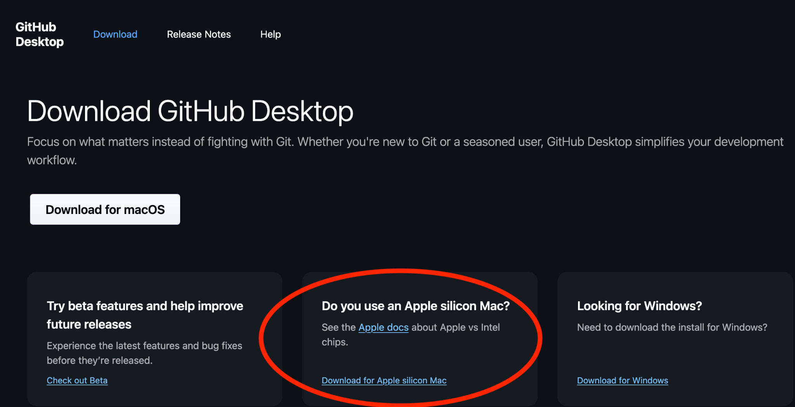

You should see a welcome message like the screenshot below. Click the
Sign in to GitHub.com button:

⚠️ If and ONLY you are using a Mac with an Intel processor, then proceed and click Download.
Otherwise, if your computer has an Apple Silicon processor: Under “Download for macOS,” click Download for an Apple Silicon Mac.

Click the Download button.
You should see a welcome message like the screenshot below. Click the
Sign in to GitHub.com button:
You should get a message asking you to authorize GitHub Desktop. Accept, and it should take you back to a screen in GitHub Desktop that looks like this:

If you don’t see this screen, and instead it looks like it is still waiting for you to log in, click the Cancel button, and then try the option that says “Sign in to GitHub.com using your username and password” instead.
If you do see this screen, do enter your real name, but don’t change the email! Click Continue.
Click Finish.